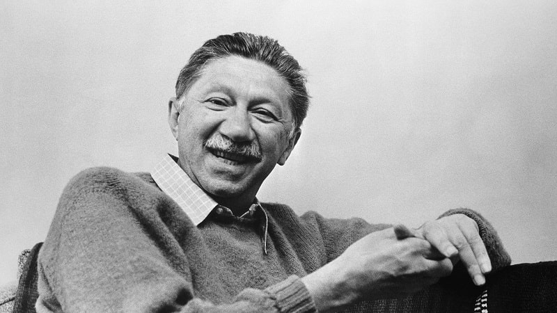

О пирамиде Маслоу слышал каждый маркетолог, психолог, социолог и экономист нашего времени. Влияние пирамиды потребностей человека на прогресс в четырех перечисленных выше областях сложно переоценить. В материалах этой статьи мы поговорим о влиянии желания, рассмотрим пирамиду Маслоу с теоретической и практической точек зрения, дадим подробное описание теории и разберем конкретные примеры использования на разных уровнях.
Что такое пирамида Маслоу
Это график иерархии человеческих потребностей, представленный в виде пирамиды из 5 или 7 уровней. На нижнем уровне располагаются базовые физиологические потребности тела человека, которые американский психолог А. Маслоу считал наиболее приоритетными для жизни. На последнем уровне – вершине пирамиды – располагаются духовные потребности человека, высшие из всех. Согласно классической теории Маслоу, закрывая один уровень, человек должен переходить к следующему, пока не достигнет полной самореализации в жизни.
Биография и идеи Абрахама Маслоу

Абрахам был старшим сыном в семье Масловых – киевских эмигрантов, живших в Нью-Йорке. Он родился в 1908 году, закончил школу с отличием и в 1928 году начал учебу в Висконсинском университете, куда перевелся из юридического Городского колледжа Нью-Йорка. В 1934 году Абрахаму Маслоу присвоена степень доктора. В том же году он начинает работу в Колумбийском университете под руководством Эдварда Торндайка, знаменитого американского психолога бихевиориста и преподавателя. Спустя три года он переводится в Бруклинский колледж, в котором занимает должность профессора психологии.
После 14 лет работы в Бруклинском колледже, Маслоу принимает решение заняться исследованиями в области самоактуализации индивидов. Поначалу его научная работа не имела успеха в кругах американских психологов. Многие знаменитые ученые сторонились его, говорили о нем, как о несостоятельном ученом, а авторитетные научные издания отказывали ему в публикациях.
Все изменилось в 60-е годы, когда идеи Маслоу, наконец, получили признание научного сообщества. В середине 60-х Абрахам Маслоу стал настолько популярен, что даже был избран президентом Американской психологической ассоциации в 1967 году. Через три года – 8 июня 1970-го Абрахам Маслоу ушел из жизни от острого инфаркта миокарда в возрасте 62 лет.
Суть теории пирамиды потребностей
Маслоу изучал потребности человека, их формы, порядок повышения потребностей, степени удовлетворения потребностей и их воздействие на поступки, поведение и образ деятельности человека, и делал это совершенно иначе, чем современная ему психология. Согласно его теории, существует несколько иерархических уровней потребностей человека от базовых или низших уровней до возвышенных:
{kind=link}
- физиологические нужды человека – низшие необходимости, заложенные природой для жизни, например, еда, вода, сон;
- потребность в безопасности человека – когда беспокойств от неудовлетворенных физиологических потребностей больше нет, человек стремится обезопасить себя от внешних угроз, приобрести защиту и уверенность в завтрашнем дне;
- социальные потребности человека в общении и уважении – когда потребности в пище и убежище удовлетворены, голод, жажда и усталость не угнетают человека, проявляются социальные и чувственные потребности личности, желание общаться, дарить и принимать любовь, заботиться о ком-то, просто быть частью какого-либо сообщества, группы, семьи;
- желание признания – когда предыдущие три уровня удовлетворены, человек желает, чтобы его достижения и заслуги были признаны в обществе, для него становится важным мнение окружающих, уважение, положение в группе, к которой он принадлежит;
- потребность человека в самоактуализации – когда удовлетворены 4 предыдущих уровня, возникает желание реализовать свои таланты и творческий потенциал личности, найти любимое дело жизни.
Каждая следующая потребность возникает только после удовлетворения предыдущей. Так, испытывающий сильный голод человек может пренебречь соображениями безопасности, а одинокий не думает о своем положении в обществе. Когда человек больше не голоден, он может добавить к базовым потребностям организма психологические потребности и стремиться их удовлетворить.
Эта базовая пирамида потребностей человека из пяти уровней позже была дополнена еще двумя видами потребностей между признанием (четвертой ступенью) и самоактуализацией (пятой ступенью). Это познавательные и эстетические потребности человека. Согласно теории Маслоу, полной самореализации достигает менее 2% людей. Эти люди не идеализируются и не восхваляются, напротив, автор теории - Абрахам Маслоу - обращает внимание на присущие им недостатки.
Самореализованному человеку присущи 15 качеств характера:
{kind=link}
- неискаженное восприятие жизни и окружающего мира – свобода от предрассудков, стереотипов, ясное мышление человека;
- неискаженное восприятие себя и других людей – адекватная самооценка без возвышения или принижения себя;
- спонтанность – способность спонтанно находить удачные решения;
- служение человека высокой цели жизни – действия подчинены не промежуточному положению дел, а собственной глобальной миссии человека;
- отрешенность – умение человека не принимать близко к сердцу неудачи в жизни и сложные ситуации;
- самостоятельность – способность человека брать на себя ответственность, собственная позиция, сила воли человека;
- оригинальность – умение человека видеть в привычном новое и нестандартное;
- глубинные переживания человека – концентрация на истинном «Я», поиски глубокого смысла происходящего;
- чувствительность человека к общим проблемам – способность ассоциировать себя с человечеством;
- межличностные связи человека – настроенность на позитивное общение, умение справляться с конфликтными ситуациями;
- уважение человека к чужому мнению – отсутствие потребности навязывать свою точку зрения и подавлять чужую;
- разборчивость в средствах достижения цели – соблюдение человеком моральных норм и этикета;
- чувство юмора, самоирония, способность человека не унывать;
- творческий подход к любым начинаниям;
- критическое мышление человека – осторожное отношение к догмам и стареотипам.
Ценность работы Маслоу в том, что она детально объясняет принципы возникновения человеческой мотивации.
Авторство
Авторство пирамиды Маслоу, как графика, по-прежнему вызывает споры. Первое применение графика датируется 1975 годом, спустя 5 лет после смерти А. Маслоу. Автор публикации - У. Стопп, о жизни которого практически ничего не известно. В книгах самого Маслоу никогда не было пирамид, как и других графиков или схем, в связи с чем бытует мнение, что появление пирамиды к Маслоу никак не относится.
Уровни потребностей пирамиды Маслоу
Существует два варианта пирамиды: базовый – из пяти уровней и расширенный – из семи уровней. Первая ступень, на которой находятся базовые физиологические потребности жизни человека, соответствует нижнему блоку пирамиды, самому широкому. Потребность в самоактуализации или духовные потребности (5-й или 7-й уровни) располагаются на вершине пирамиды, в самом узком блоке. Именно Маслоу стал новатором, впервые заговорившим о анализе духовных потребностей человека. До него психологи не придавали им значения.
5 уровней
{kind=link}
- Базовые физиологические потребности тела. Еда, отдых, убежище.
- Безопасность. Стабильность и постоянство в жизни, отсутствие серьезных внешних угроз.
- Социальные потребности. Наличие круга общения, близких людей, друзей, семьи, поддержка и любовь, дети, дом.
- Статус. Достижения в профессиональной сфере, уважение, признание, власть, значимость.
- Самоактуализация. Раскрытие человеческих талантов, творческого потенциала, жизненного предназначения, духовные потребности и задачи - здесь обретается главная цель жизни.
7 уровней
{kind=link}
- Базовые физиологические потребности тела.
- Безопасность.
- Социальные потребности.
- Статус.
- Стремление познавать. Расширение кругозора, эрудиция, новые знания, ответы на важные вопросы, познание мира - когда человеку интересно все вокруг и хочется искать ответы на все вопросы.
- Эстетические потребности. Чувство прекрасного, искусство, гармонизация окружающей обстановки, красота.
- Самоактуализация.
Плюсы и минусы в теории Маслоу
Теория Маслоу продвинула современную ему психологию вперед, позволила создать базу для развития новых теорий в области поведения и мотивации человека. Несмотря на солидный возраст, теория до сих пор применима в бизнесе и в сфере личностного развития.
|
Плюсы |
Минусы |
|
|
Примеры применения пирамиды Маслоу
Пирамида потребностей Маслоу нашла свое применение по меньшей мере в 6 направлениях:
- маркетинг;
- менеджмент;
- карьерный рост;
- предпринимательство;
- наука;
- повседневная жизнь.
В маркетинге
Маркетологу очень важно знать, что мотивирует человека к покупке и что останавливает. Тщательное изучение пирамиды Маслоу позволяет понять, к какому уровню пирамиды относится их предложение, какую потребность закрывает их продукт, с какой стороны к клиенту лучше подойти. Это позволяет составить более точный психологический портрет клиента, его принадлежность к тому или иному сегменту ЦА, и при выборе маркетинговой стратегии правильно определить инструменты влияния, сформировать правильный взгляд на ЦА. Например, если вы продаете дорогие часы, ваш продукт подчеркивает статус владельца, принадлежность к элитарной группе. Если же это железная дверь, покупателем движет стремление обеспечить комфорт и безопасность. Если фармацевтические товары - покупатель хочет восстановить здоровье. Очевидно, что это совершенно разные психологические портреты покупателей, требующие разных подходов.
В управлении
Чтобы эффективно управлять людьми, необходимо хорошо понимать, что ими движет, за чем они следуют. Пирамида Маслоу позволяет понять мотивацию сотрудников и использовать ее правильно, чтобы повысить эффективность работы. Например, одни сотрудники работают, чтобы питаться, платить за жилье, ради содержания семьи, другие получают на работе необходимое общение, третьи являются карьеристами – ими движет страсть к достижениям, четвертые видят в работе творчество, возможность реализации себя.
В карьере
Понимание своих потребностей означает, что вы сможете точно определить, чем вам нужно заниматься в настоящий момент. Это поможет избежать кризисов, стрессов и профессионального выгорания. Любая неудовлетворенность – это следствие пропущенной потребности, поэтому, если вам слишком тяжело на текущей работе, скорее всего она не совпадает с вашими желаниями. Например, удовлетворять потребность в достижениях можно лишь там, где есть перспективы карьерного роста, а потребность в творчестве – только в творческих профессиях.
В бизнесе
С точки зрения развития, компания имеет те же самые потребности, что и человек. Базовые - означают, что потребности фирмы требуют свести концы с концами – выплачивать зарплаты сотрудникам, погашать долги, поддерживать работу без перебоев. На более высоких уровнях есть потребности минимизировать вред для окружающей среды от производства, приносить пользу обществу, транслировать высшие ценности. Но если компания едва сводит концы с концами, о трансляции ценностей думать рано, сначала нужно закрыть базовые потребности. Пирамида Маслоу поможет в планировании развития, с ее помощью можно прописать этапы роста и отслеживать текущее состояние.
В науке
Пирамида Маслоу послужила отправной точкой для целого ряда новых исследований в области мотивации. До сих пор исследования в этом направлении продолжаются, многие из них опираются на пирамиду Маслоу, несмотря на ее многочисленные несовершенства. Сам Абрахам Маслоу утверждал, что существует множество примеров отклонения от иерархии потребностей. Например, люди с незакрытыми базовыми потребностями иногда показывают высокий уровень стремления к самоактуализации, и наоборот – те, чьи потребности закрыты до 3 или 4 уровня, предпочитают остановиться на этом. Но эти пробелы пирамиды представляют большой интерес, т.к. указывают на недостающие пазлы в общей картине.
В повседневной жизни
Если взглянуть на свои действия с точки зрения пирамиды Маслоу, можно многое узнать о неочевидных мотивах и найти перспективы для саморазвития. Например, Марина очень любит ходить по магазинам. У нее страсть к брендовым вещам, к дорогой технике, последним моделям смартфонов и другим премиальным товарам. Эта страсть обходится ей в солидную сумму каждый месяц, поэтому ей хотелось бы понять, чем она вызвана.
Благодаря самоанализу с помощью пирамиды Маслоу, девушка поняла, что ей движет стремление подчеркнуть собственный статус в глазах окружающих, ощущение принадлежности к числу богатых и успешных людей. Ей не столько нужен айфон последней модели, сколько – впечатление людей, которые увидят этот телефон в ее руках. Она хочет выглядеть как человек, который может себе позволить дорогие покупки, у нее есть страх показаться недостаточно статусной.
Еще Марина заметила, что реклама, на которую она всегда эмоционально реагирует, включает в ней именно желание подчеркнуть свой статус должным образом. Теперь девушка может пересмотреть свои реальные потребности, изменить поведение и привычки на полезные, более сдержанно реагировать на рекламные материалы, понимая, с чем связана ее жажда покупок.
Спорные моменты в теории Маслоу
Т.к. теория является «первой ласточкой» в системном изучении потребностей и мотиваций, она имеет множество спорных положений, что не умаляет ее ценности. Основными спорными моментами являются авторство (о котором мы уже упоминали), актуальность, практичность и последовательность теории.
Актуальность
Исключения из иерархии допустимы даже по мнению самого автора иерархии, который никогда не скрывал, что пирамида является весьма общей моделью и не всегда отражает частные случаи. Однако неточность пирамиды усугубляется с течением времени, т.к. все меньше людей в мире испытывают дефицит в базовых потребностях. Кроме того, ценности современного общества постепенно меняются, стремление к карьерному росту, престижу, созданию материальной базы зачастую берут верх над потребностями в любви и признании. Такой вывод сделали американские и канадские ученые, которые обновили пирамиду в 2010 году.
Теория и практика
Пирамида Маслоу является теорией в чистом виде и построена на многочисленных обобщениях, поэтому ее сложно применять на практике в классическом виде. Можно столкнуться с такими проблемами, как статистическая недостоверность и неактуальность иерархии для настоящего времени. На пирамиду Маслоу опираются как на принцип, но для практического применения она всегда уточняется.
Последовательность
Пирамида имеет четкую иерархическую структуру, в которой предполагается переход на следующую ступень строго после закрытия предыдущей. Но на практике мы видим, что система далеко не всегда работает именно так, чаще она работает в обход этого правила. Существует множество примеров игнорирования ступеней снизу, когда человек закрывает верхние ступени, имея незакрытыми нижние. Также нередко игнорируются ступени сверху, когда после закрытия первых ступеней, последующие не вызывают у человека никакого интереса.
Критика пирамиды Маслоу
Пирамиду Маслоу критикуют за:
{kind=link}
- отсутствие понятного инструмента измерения удовлетворенности, что делает теорию недоказуемой;
- обобщение иерархии, которое приводит к невозможности учесть культурные, национальные и иные объективные факторы влияния;
- недостаточное объяснение принципов работы мотивации (непонятно, почему закрытые потребности, например - безопасность, продолжают мотивировать);
- отсутствие объяснений неординарных поступков.
Наличие «темных пятен» приводит к возникновению альтернативных теорий, попыток менять ступени местами, использовать другие модели или даже уравнивать потребности между собой, что делал, например, ученый Джон Бертон.
Также среди критиков популярным аргументом является тот факт, что сам Маслоу отказался от изначального варианта теории. Известно, что иерархия потребностей была пересмотрена ученым и сокращена до двух больших групп потребностей:
- насыщаемые или низшие дефицитные потребности;
- ненасыщаемые или высшие бытийные потребности, продиктованные постоянным личностным ростом.
Однако даже эту пересмотренную концепцию Маслоу позиционировал как предположение. Ученый собирался работать над теорией дальше, но его планам помешала смерть. Сегодня оба варианта теории Маслоу лучше всего рассматривать в качестве философской концепции, а не практического руководства.
Альтернативные теории
Определенные идеи Маслоу продолжают активно развиваться в трудах других известных ученых психологов - его последователей, и стали основой многочисленных альтернативных теорий. Вот некоторые из версий:
{kind=link}
- Теория Альдерфера. Выделены следующие группы потребностей: существования (Existence), связи (Relatedness), роста (Growth). Особенность теории в отсутствии иерархии, как у Маслоу.
- Теория МакКелланда. Выделены следующие группы потребностей: власть, успех, причастность. Низшие потребности в рамках данной теории не рассматриваются, т.к. по мнению исследователя они всега удовлетворены в той или иной мере.
- Теория Герцберга. Ученый исследовал удовлетворение от выполненной работы и в своей теории рассматривал только факторы, влияющие на удовлетворение сотрудника. Такие факторы делятся на две категории – мотивационные и удерживающие.
- Теория Портера – Лоулера. Ученые работали над комплексной моделью мотивация и личность. В нее включается пять пунктов: усилия, оценка процесса, результат, награда, степень удовлетворения.
- Мотивационная теория подкрепления. Базируется на понимании последствий любого действия или поведения, которые бывают позитивными и негативными. Если действие подкрепляется позитивными результатами, формируются установки на повторение этого действия.
- Классификация потребностей по П.В. Симонову. Выделяются три группы потребностей – витальные, социальные, идеальные.
- Психотехнический подход Г. Мюнстерберга. Исследования в области психологии труда и организации условий труда так, чтобы они стимулировали рабочий процесс.
Часто задаваемые вопросы
Остается достаточно актуальной по-прежнему, несмотря даже на количество спорных моментов и наличие новой информации. В обществе постоянно прослеживается тренд на осознанность, желание улучшить качество жизни, которое, естественно, основывается на внутреннем самоощущении, чувствовать себя лучше. Когда приходит понимание потребностей, это помогает современному человеку оценить ситуацию, разобраться в себе, вносить качественные корректировки в свой образ жизни должным образом, идти в нужном направлении и вести за собой других людей.
Пирамидой Маслоу активно пользуются не только маркетологи, но также психологи, психотерапевты, коучи и представители других помогающих профессий, оказывающие услуги в сфере психологии, обучения, саморазвития и так далее.
На потребности человека влияют объективные факторы внешней среды, такие как уровень жизни, политическая ситуация, проблемы общества. Не меньшее воздействие на потребности оказывают ценности и приоритеты, заложенные воспитанием. Их зачастую определяют культура и религия.
Необходимо составить портрет клиента. Для этого применяется методика Шеррингтона, известная как 5W. После необходимо проанализировать интересы потребителей, используя для этого статистику по реакции на рекламные материалы. Затем можно провести исследования, которые позволят больше узнать об индивидуальных потребностях клиентов, бюджете, болях. Полученные данные анализируются с помощью пирамиды Маслоу.
Первичные нужды – это базовые физиологические потребности тела: еда, воздух, сон, убежище. Вторичные – это психологические потребности: успех, признание, понимание, уважение, любовь, самореализация. В закрытии первичных потребностях остро нуждается каждый человек, потому что от них зависит выживание. Вторичные потребности – это потребности личности, их удовлетворение важно, но если они не удовлетворяются, это не приводит человека к гибели. Например, любовь нужна каждому, но когда ты умираешь от голода, важнее не умереть. По этой причине психологическим потребностям присвоен второй номер.
Каждая ступень пирамиды важна, на каждой может возникнуть чувство неудовлетворения. Это чувство будет причинять страдание человеку независимо от его успехов на других ступенях, поэтому очень важно выявлять неудовлетворенную потребность своевременно.
Заключение
Самый лучший способ проверить эффективность работы с пирамидой Маслоу – внедрить ее принципы в свою повседневную жизнь. Это не требует расходов и не займет у вас много времени, а в результате такой практики вы сможете:
- экономить деньги;
- направлять время и энергию в наиболее важное для вас русло, выбрать правильное занятие;
- достичь большей удовлетворенности в отношениях, работе и творчестве;
- научиться лучше понимать других людей и собственные мысли, подбирать правильные слова в диалоге;
- почувствовать, что ваши потребности защищены.
Оставить комментарий
Войти с помощью